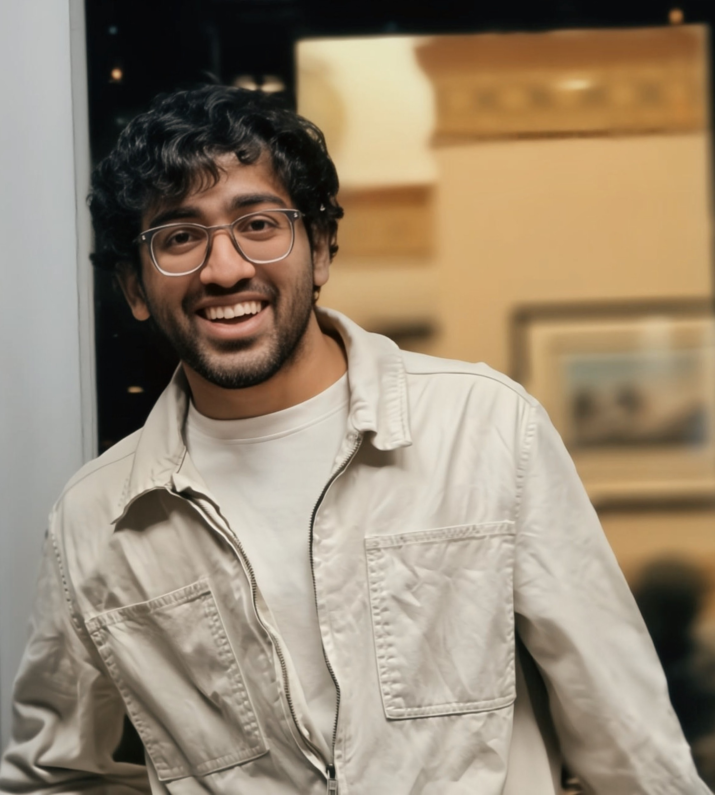

Front page
Data Analyst &
Data Scientist
SQL and Python to make data trustworthy, Tableau to make it legible, and causal inference to make it actionable.
5/5
Forecasting
40.6%
Causal inference
Live
Data engineering

Front page
SQL and Python to make data trustworthy, Tableau to make it legible, and causal inference to make it actionable.
